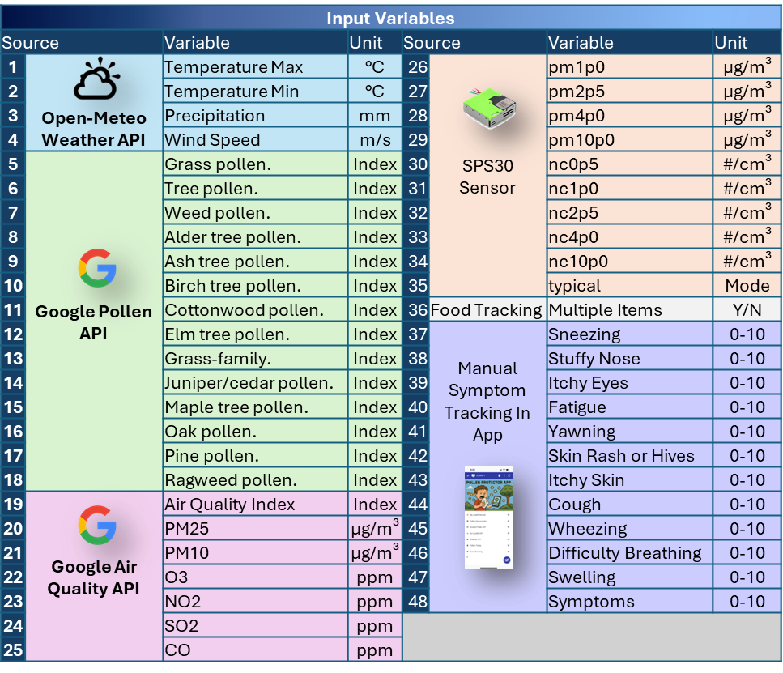
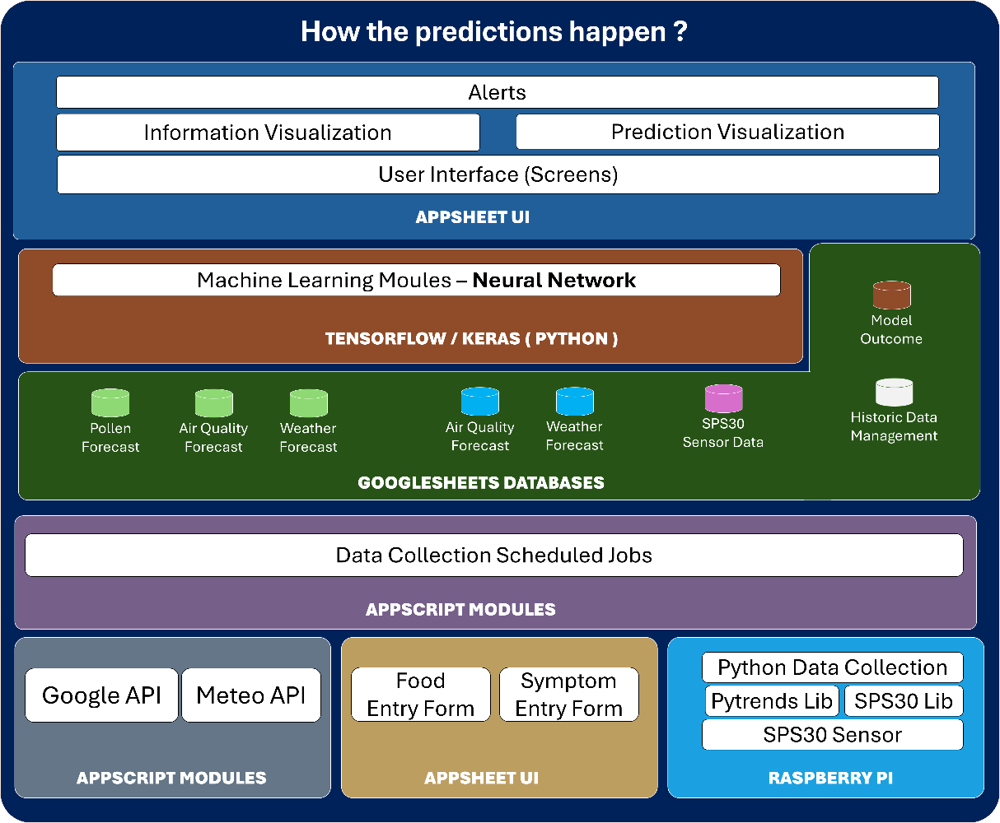
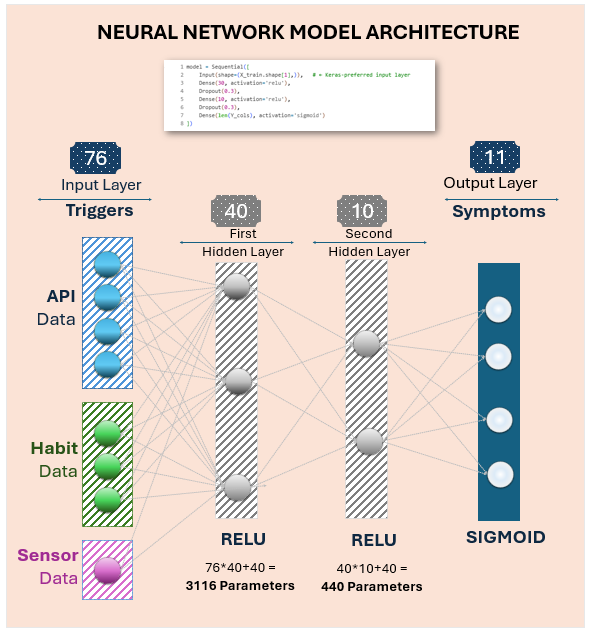
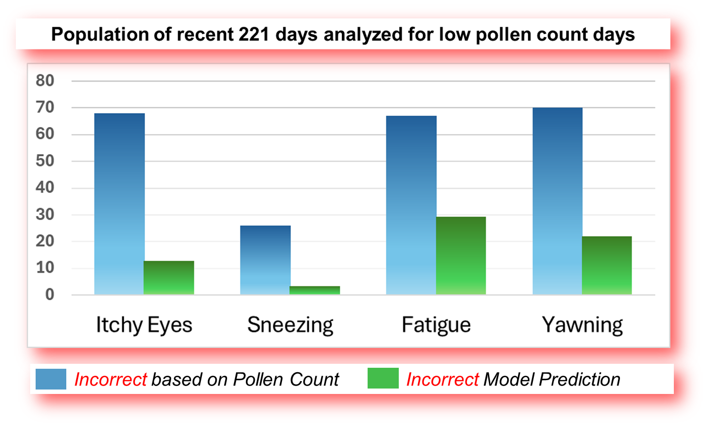
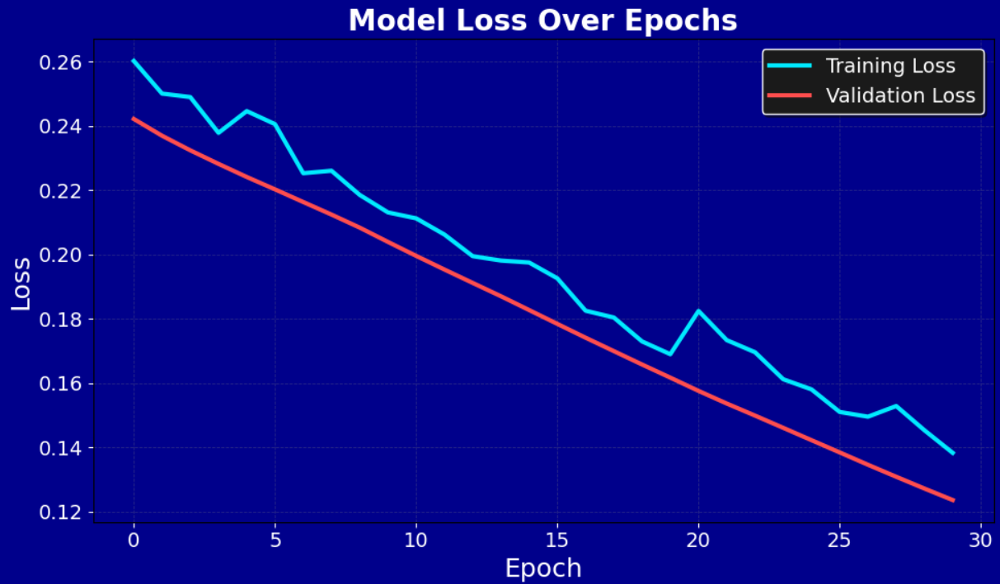
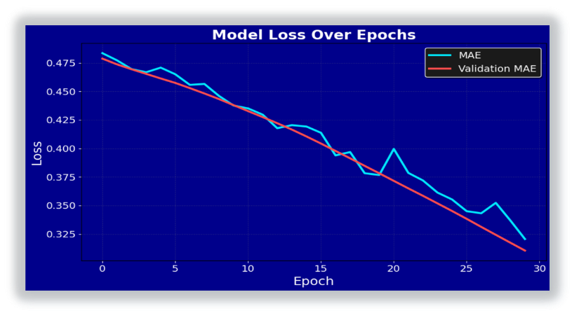
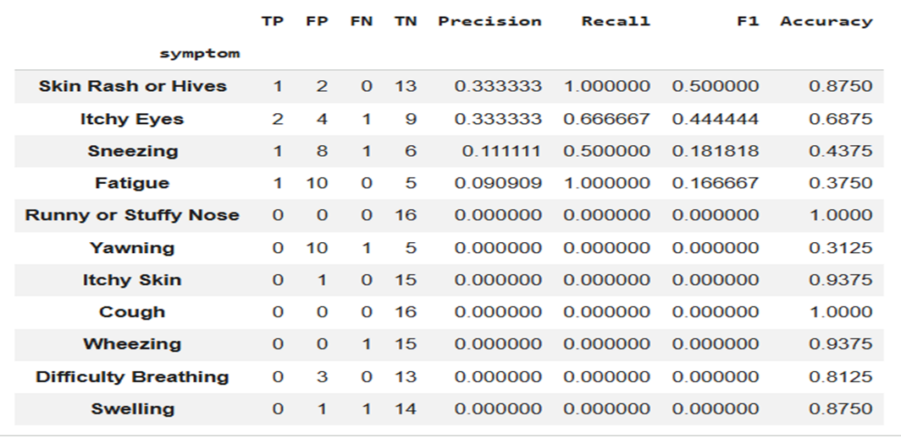
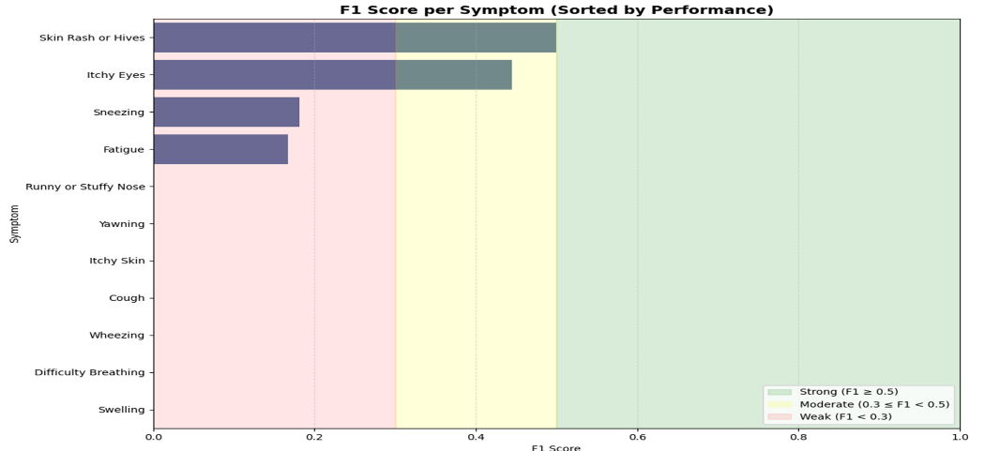

The question
Generic pollen forecasts assume people react similarly. This project tests whether a model trained on one person's own history can make a more useful next-day prediction.
Can a personalized machine-learning model that combines pollen, weather, air quality, indoor dust data, and daily symptom history reliably predict next-day allergy symptom severity and provide an early warning?
What the model sees
The project intentionally goes beyond pollen. Outdoor conditions, indoor air, behavior, and symptom reports are brought together into one daily dataset.

How predictions happen
A scheduled pipeline turns the experiment into a repeatable daily system: collect → store → train → predict → show an alert.

Data entry
Apps Script gathers pollen, weather, air quality, trend data, and indoor sensor readings, then standardizes the daily record.
Automation
Time-based triggers collect new data, validate the latest row, refresh calculations, retrain, and run predictions.
Database
Google Sheets stores the history of environmental variables, indoor readings, and personal symptom logs.
Machine learning
TensorFlow/Keras learns relationships between conditions and next-day symptom outcomes.
User interface
AppSheet handles daily logging and presents current predictions and high-risk warnings.
The neural network
The model converts a wide mix of inputs into separate symptom predictions. The architecture stays compact enough to retrain routinely as new personal data arrives.
Personalization is the key idea
Instead of asking only “Is pollen high?”, the network learns combinations that are specific to the user — for example wind + dryness + particles + past symptom patterns.
Evaluation
Training uses metrics including MAE, RMSE, and R². Predictions can also be converted to high-risk flags with a predefined cutoff.

What the data showed
The training curves improved over time, while symptom-level evaluation showed that some outcomes were easier to forecast than others. The most practical comparison was against the simple pollen-only baseline.
Personalization beat the pollen-only warning on the low-pollen comparison.
Across the recent 221-day low-pollen subset shown in the project report, the personalized model made fewer incorrect predictions for itchy eyes, sneezing, fatigue, and yawning. That is the setting where a generic “low pollen = low risk” rule is especially likely to miss symptoms driven by other conditions.





Project walkthrough
A video presentation of the research question, data pipeline, model, and results.
If the embedded player does not load, watch the presentation on YouTube ↗.
What it means
The project supports the idea that allergy forecasting can become more useful when it learns the way multiple environmental conditions interact for one person.
More than pollen.
The model combined pollen, weather, air-quality and particle measurements with personal symptom history. The report concludes that this multi-factor approach can identify symptom risk that a pollen-only warning may miss — particularly on low-to-moderate pollen days.
Key limitations: one participant, a limited collection window, self-reported symptoms, and missing variables such as exact outdoor exposure time, sleep, and detailed medication timing.
Future possibilities
The report groups future work into three directions: richer data, smarter modeling, and broader integrations.
More inputs
Add participants, collect across more seasons, expand sensor coverage, improve symptom labels, and incorporate medical guidance where appropriate.
Smarter modeling
Engineer stronger features, compare additional model types, deepen personalization, and strengthen privacy and security.
More integrations
Explore LLM-assisted explanations plus calendar, reminder, and collaboration integrations for predicted high-risk days.
Selected references
Background research cited in the project report.
- Alnahas, S. et al. (2023). Prevalence, severity, and risk factors of allergic rhinitis among schoolchildren in Saudi Arabia. World Allergy Organization Journal. DOI ↗
- Ng, A. E., & Boersma, P. (2023). Diagnosed allergic conditions in adults: United States, 2021. CDC/NCHS. CDC ↗
- Asthma and Allergy Foundation of America. (2025). Allergy Capitals. AAFA ↗
- Osborne, N. J. et al. (2017). Pollen exposure and hospitalization due to asthma exacerbations. DOI ↗
- Shrestha, S. K., Lambert, K. A., & Erbas, B. (2021). Ambient pollen concentrations and asthma hospitalization in children and adolescents. DOI ↗
- Carlsen, H. K. et al. (2022). Birch pollen, air pollution and their interactive effects on airway symptoms. DOI ↗